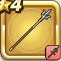

バトルフォーク
攻略班 5.0点 / けものづき一閃突き猛進突き
くわしい特徴
【レベル別習得スキル】 Lv1けものづき（消費MP：3）けもの系に威力180%それ以外の系統には120%の斬撃ダメージを与える Lv8一閃突き（消費MP：18）敵1体に30%の確率で斬撃ダメージの会心の一撃を与える。こころや心珠で会心率を上げても影響を受けない。 Lv20猛進突き（消費MP：19）強烈な一突きで、敵1体に威力270％の無属性斬撃ダメージを与える。 Lv28ドラゴン系へのダメージ+3% Lv36攻撃時+2%の確率で幻惑を与える Lv40攻撃力+8 【限界突破スキル】 1凸ドラゴンゾンビへのダメージ+30% 2凸ドラゴンガイアへのダメージ+15% 3凸ヘルジュラシックへのダメージ+30% 4凸ドラゴンガイアへのダメージ+15%